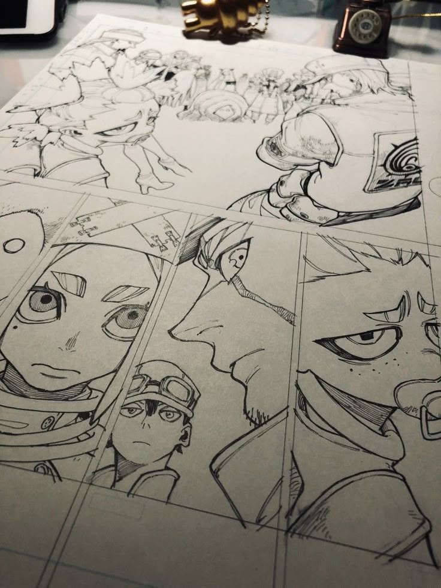
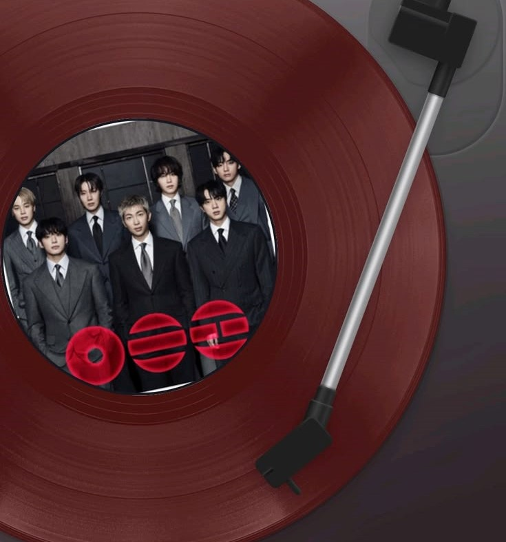
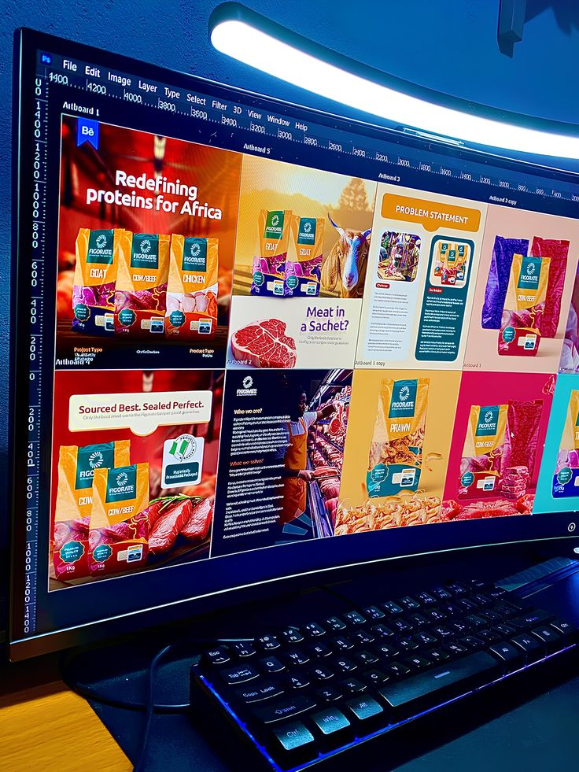
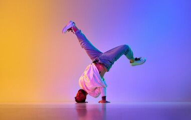

Dessiner
Le dessin est ma façon de donner vie à mon imagination. Que ce soit au crayon, à l'encre ou en numérique, j'aime capturer des idées et des émotions sur papier.
Mes activités favorites en dehors du code

Le dessin est ma façon de donner vie à mon imagination. Que ce soit au crayon, à l'encre ou en numérique, j'aime capturer des idées et des émotions sur papier.

La musique accompagne mes journées de codage et m'inspire dans mes créations. Du jazz Mediteranéen à la K-pop, en passant par le rap, j'apprécie une grande variété de genres.

Créer des affiches me permet d'allier design et communication visuelle. J'aime concevoir des visuels percutants pour des événements, des causes ou simplement pour le plaisir.

La danse est mon exutoire, ma façon de m'exprimer avec mon corps. Elle me permet de me détendre, de m'énergiser et de célébrer la vie au rythme de la musique.